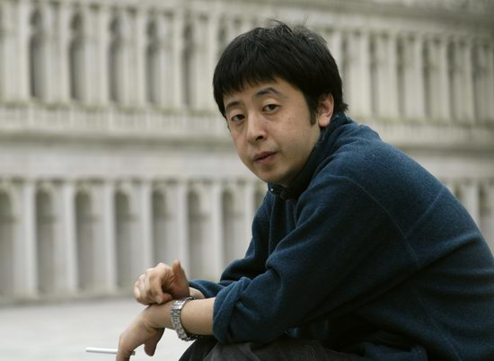

修复记忆的骑士
失望和愤怒总是后青春期挥之不去的情绪。
1994年冬，北京电影学院文学系的学生贾樟柯、顾峥和王宏伟在宿舍楼梯边聊天，他们刚看完几部电影，一边喝着啤酒，
一边表达着内心的不满：“第五代”导演越来越商业化了，对现实无动于衷，对问题熟视无睹。也许是酒精，抑或是荷尔蒙的作用，三个人仿佛一下子有了责任感
。
据顾峥后来回忆，贾樟柯当时说话竟带着比平时更多的山西口音：不能让这本人搞了，咱得弄点实实在在的东西。王宏伟则有点儿激动，一伸手摔了一个空酒瓶，
瓶子碎的声音在夜空中格外刺耳。过了一段时间，“青年电影实验小组”成立。名字虽不高调，却足够反叛，似乎表达了王宏伟摔酒瓶时的那句宣言——不管，就是要拍！
一晃将近20年了，曾经的愤怒青年也早已度过不惑之年。后浪追赶着前浪，如今的贾樟柯也已成为新生代导演中的领军人物，他的电影引来更多人的关注，
而传记作家罗银胜新出的《贾樟柯：From文艺青年To新生代导演》一书，对于喜爱或只是想了解贾樟柯的人来说，是一本比较全面的作品。罗老早年曾为顾准、杨绛、周扬、王元化等思想文化界名人作传，
他的作品也一向以丰富的资料和细腻的描写见长，这本书更是鲜活地展现了贾樟柯的成长历程以及富有个性的独特导演经历。
为了自由：我比孙悟空头疼
“应该感谢电影，电影拯救了一个不良少年”，罗银胜在“少不更事”一章中这样写。
贾樟柯成长于山西汾阳，与他同时代的好多年轻人一样，21岁之前他一直在混混沌沌
地混日子。在荒败的小县城混时，有很多机会沦落，变成坏孩子，毁了自己。
贾樟柯回想说：是父亲改变了我，他让我干了一件我特别不愿意干的事情，就是读书。
可对于数学从没及格过的贾樟柯来说，为了能够上大学，他也只能去省城太原培训班学习美术。我二十一岁之前根本不知道自己该干什么
，贾樟柯说，那时候
只有一点我是明确的，那就是要走出去，想要离开那片土地——我不想过那种每天八小时上下班的日子，觉得那样简直太无聊了！我想去找一个自由的职业，做一个没有人管束的人。
2006年9月10日，威尼斯电影节，来自中国导演贾樟柯的《三峡好人》获得电影节最高奖项金狮奖。在获奖感言里，贾樟柯最后讲了一句话，他说做电影人，是我寻找自由的一个方法
。
这一天，距离从汾阳到太原学画画的1991年，已整整十五年。
人生来就不自由，年轻时感觉尤为强烈。回想起自己十七、八岁念书的时候，贾樟柯说：晚上老不睡觉，总期待第二天的到来，总觉得天明了就会有新的改变，就会有什么新的事情发生
。
这是年轻生命对未来的渴望，也对自由的渴望。贾樟柯写过一篇文章：《我比孙悟空头疼》。文中，他说:自由问题是让人类长久悲观的原因之一，悲观是产生艺术的气氛。
不自由是人的原感受，就像生、老、病、死一样。它不是一时一世的感受，也决不特指任何一种意识形态。贾樟柯觉得做一个电影人可以寻找到他的自由，
却并不意味着这门职业本身就代表自由。任何职业，都有可能磨掉人最初的激情和力量，变得世故和实用，只剩下技巧和重复。
如果艺术的职业化仅仅以养家糊口为目的，那我情愿做一个自由自在的业余导演，因为我不想失去自由。当摄影机开始转动的时候，我希望永远能问自己一声，眼前的一切是否是你真正的所思所感
。
如果把贾樟柯这段话中“艺术”、“导演”、“摄像机”等词换成其他职业的一些词语，不也是很恰当么？因而他说：我悲观，但不孤独，在自由的问题上，连孙悟空都和我们一样。
修复记忆：我的摄影机不撒谎

不能让后人看今天的电影就是一帮古人在打架。
相信王朔的这句调侃说出了很多人的感受。贾樟柯去拍《小武》，也是因为这种不满：有一种生命体验，
非常多的人的生活状况被遮蔽掉了，若干年后想想大多数中国人是怎么生活的，如果你从当时的银幕上寻找，全是假的，全是谎话。
在《我的摄影机不撒谎》一书中，贾樟柯坦言：在中国，官方制作了大量的历史片，而在这些官方的制作中，历史作为官方的记忆被书写。
他也对
现在很多导演略有微词：这些人怎么就是拍那种宏大的、科幻的、奇幻的东西，杀来杀去、飞来飞去，怎么就拍不出像杨德昌、侯孝贤那样的电影呢？
我们不应该懦弱到连现实带给我们的刺痛感都不敢面对
，贾樟柯说，我想将个人的记忆书写于银幕，而记忆历史不再是官方的特权，作为一个知识分子，我坚信我们的文化中应该充满着民间的记忆。
回想起对自己影响很大的八十年代，贾樟柯觉得对他来说那就是个体意识的复苏。而如今，处在一个全民娱乐的时代，那些花边消息充斥的娱乐元素，
可能是记忆的一部分，但他们很多年后不会构成最重要的记忆。这个时代最重要的记忆，可能是今天特别受到冷落的一些艺术作品所承担的。
我想讲述深埋在过往时间中的感受，那些寄托着莫名冲动而又无处可去的个人体验。
贾樟柯曾这样表达自己的创作理念。
于是，带着对“主流意识”和“官方书写”的不满，贾樟柯想用电影去关心普通人，这与另一位电影导演安东尼奥尼那种
“我只关心人”的理念如出一辙。（电影）首先要尊重世俗生活。在缓慢的时光流程中，感受每个平淡的生命的喜悦或沉重。
骑士精神：知道自己在做什么，所以不妥协
曾有记者问贾樟柯：你电影里的忧伤来自哪里？贾樟柯答：来自我的忧伤。
2009年12月14日，法国驻华大使苏和代表法国政府，向贾樟柯授予“法国文学艺术骑士勋章”。苏和说：贾樟柯以他惊人的洞察力，帮助我们理解了人类当下的境遇，
也为迅速变化的世界提供了来自中国文化的观点。
读到这儿，突然想起十年前的1999年，那时候贾樟柯刚被中国电影局禁止拍电影。他除了为自己拍的《小武》交了一万元
罚款外，还“文笔流畅”地写了一封检查，承认自己的确严重干扰了中国正常的对外文化交流。贾樟柯用了一个程度很重的词来形容当时的感受：报国无门。
从拍摄“故乡三部曲”起，贾樟柯就始终是一个地下导演的身份，由于中国电影的特殊管制体制，从被广电总局禁拍到解禁，他也曾经历了漫长的过程。
有记者问他：你过去的影片都不能与中国观众正常见面，你遗憾吗？
他说：你难以理解一个导演，他的影片不能与本国观众见面的那种失望。不能上映是弥漫在我生命里的空虚！它会把我吞噬，我从未放弃过这方面的努力。
2004年，事情有了转机。电影局新任领导的思路有了改观是一方面，贾樟柯本人作品引起在国外的巨大反响也是一个原因。“故乡三部曲”中，
《小武》于1998年获得柏林电影节青年论坛首奖、釜山国际电影节新潮流奖和法国南特三大洲电影节最佳影片金热气球奖；
《站台》于2000年获得了威尼斯电影节最佳影片和最佳导演奖；2002年5月，《任逍遥》入围戛纳，成为当年唯一一部入围的华语影片。
自由是自己争取来的
，而拍电影不依附于某种机构和体制，贾樟柯觉得这样是可行的。
在接受“骑士勋章”时，贾樟柯如此表达他心目中的“骑士精神”：所谓骑士应该有一种精神，既不屈服于权力，也不献媚大众，因为唯一能够引导我们的应该是自由与公平的精神。
或许我们最大的敌人是自己，那么骑士精神意味着在面对我们内心的堕落、黑暗和私欲的时候，我们还有良心和能力做出自己的选择。
独立意味着客观，我希望与更多的人去沟通，分享情感，思考命运，但我绝对不承认我是边缘，因为那样就等于承认，那个舞台是他们的！
贾樟柯说。